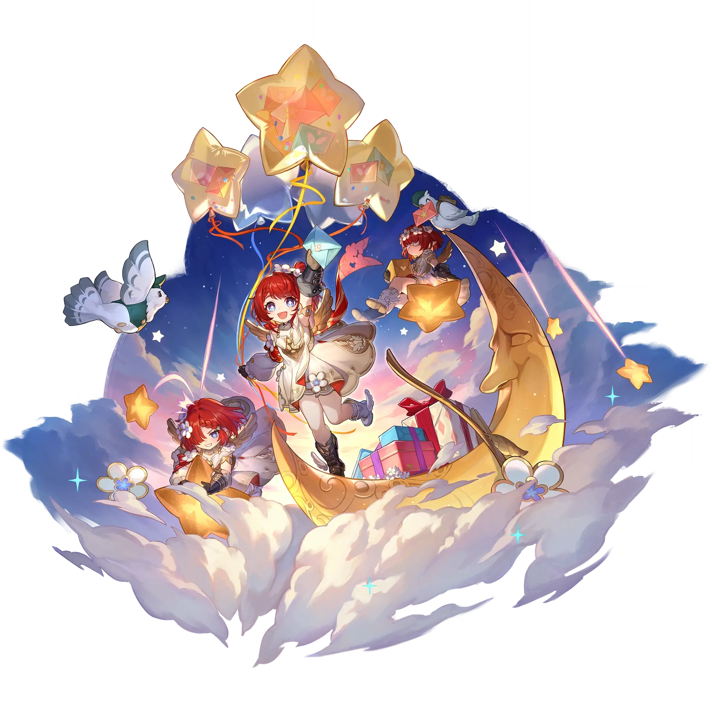

Tribbie
Best Tribbie build guide for Honkai Star Rail. See Tribbie's best Relics, Light Cones, teams, Eidolons, Trace priority, and how to play Tribbie.
🔍 Detail Skill
Semua skill aktif dan pasif beserta efeknya.
Deals Quantum DMG equal to #1[i]% of Tribbie's Max HP to one designated enemy. Deals Quantum DMG equal to #2[i]% of Tribbie's Max HP to adjacent targets.
Gains "Numinosity," lasting for 3 turn(s). This duration decreases by 1 at the start of this unit's every turn. While Tribbie has "Numinosity," increases all ally targets' All-Type RES PEN by #1[i]%.
After other ally characters use Ultimate, Tribbie launches Follow-up ATK, dealing Quantum DMG equal to #1[i]% of Tribbie's Max HP to all enemies. This effect triggers up to 1 time per character. When Tribbie uses Ultimate, resets the trigger count for other ally characters. If the target was defeated before the Follow-up ATK is launched, then launches the Follow-up ATK against new enemy targets en
After using Technique and upon entering battle, obtains "Numinosity," lasting for 3 turn(s).
⚔ Light Cone Terbaik
Diurutkan dari yang paling kuat. Persentase menunjukkan performa relatif terhadap pilihan terbaik.
💎 Relic Set Terbaik
Set terbaik untuk karakter ini, diurutkan berdasarkan prioritas.
📊 Stat Utama
Stat yang dicari pada tiap slot.
👥 Tim yang Direkomendasikan
Karakter yang sering dipasangkan bersama Tribbie.
 The Herta
The Herta
 Aglaea
Aglaea
 Ashveil
Ashveil
 Castorice
Castorice
 March 7th • Evernight
March 7th • Evernight
 Tribbie
Tribbie
🔗 Lanjutkan
Build ini dirangkum dari Prydwen Institute. Starwise tidak menghitung sendiri. Angka bisa berubah setelah patch atau karakter baru rilis.